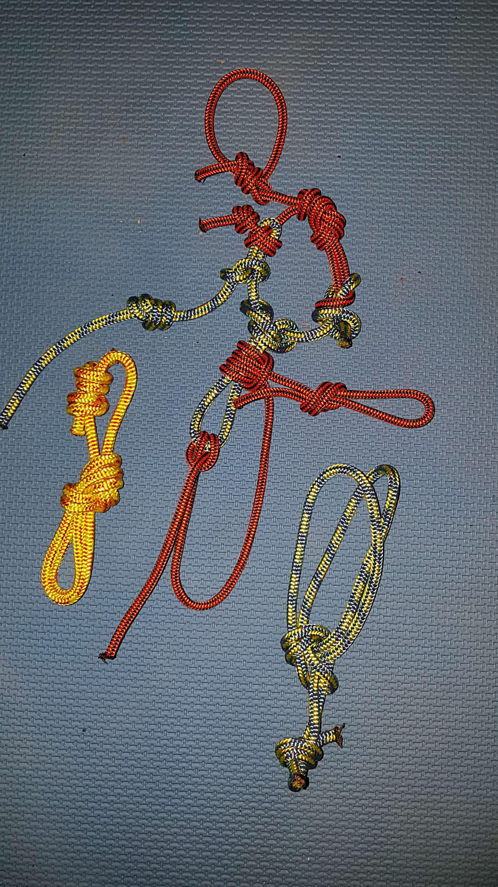

Катерене
Възли
- Водачески - 50 %
- Девятка - 10-15 %
- Осмица - 20 %
- Bowline - 35 %
- Стреме (кръстовиден) и котвен - 40 %


Материали (никога на старо)
- Внимавай за гаранционния срок,
- Всяко падане или удряне в скалата създава микро-пукнатини по карабинерите и примките.
- Примки (30 лв.) - Леко огънатата част е за въжето. Частта за скалата се поставя в посока обратна на страната на катерене. Въжето винаги е над примката, за да не се търка в скалата.
- Карабинер с муфа HMS (30-40 лв.)
- Осигурител / Протриващо устройство (20-30 или 200 лв.)
- Въже (250-400 лв.). Издържа максимум 2 падания с фактор 2.
- Въже за прусик 5мм (1.5 лв на метър)
- Защитна лента / Осигурителен ремък (10-30 лв.)
- Седалка (100-150 лв.)
Поставяне на примки
- При падане се получава голямо натоварване навън и нагоре на първата осигуровка. Ако не е добре осигурена в тези посоки (както и надолу), може да се птскубне и да повлече останалата част от осигуровката.
Техника Крака
- Пази центъра на тежестта под водещия (по-горе стъпилия) крак.
- Пази центъра на тежестта ниско и близо до стената
- Стъпването винаги е на пръсти, за да може да се връткаш наляво/надясно при нужда, и за да не опират колената в стената.
- По възможност се движи на малки стъпки
- При наклон пръстите винаги трябва да сочат срещу най-високата точка на скалното парче.
Техника Ръце
- Дръж ръцете опънати
- Не се набирай
- Използвай краката
- УПРАЖНЕНИЕ - Задържай 1-3 сек. преди хват